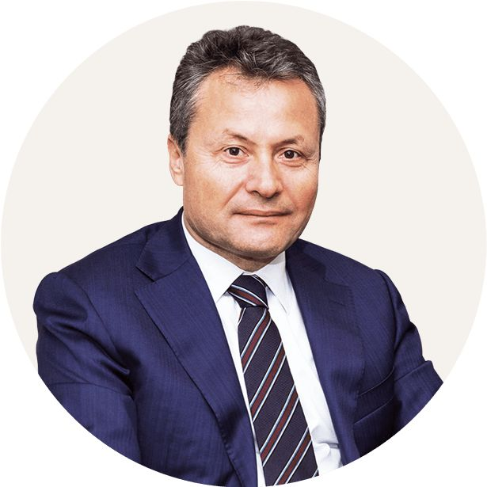

Наша миссия и экспертиза
Есть вопросы или готовы начать? Мы готовы помочь.
Связаться с намиМы — надёжная консалтинговая команда, специализирующаяся на медицинском туризме в Турции, консалтинге по инвестициям в здравоохранение, управлении больницами и системах возмещения расходов на национальном и международном уровнях.
Наша миссия — оказывать стратегическую поддержку отдельным пациентам, медицинским организациям и инвесторам, обеспечивая доступ к услугам высочайшего качества и достижение их целей наиболее экономичным способом.
Наша экспертиза опирается на прочную основу: опыт в турецком здравоохранении, работа с иностранными пациентами и модели государственно-частного партнёрства в здравоохранении.
Знакомьтесь с нашим основателем

Tahsin Güney
Tahsin Güney — руководитель высшего звена в сфере здравоохранения с более чем 35-летним опытом в области общего медицинского страхования, систем социального обеспечения, управления частными медицинскими учреждениями и работы больниц. Он известная фигура в частном секторе здравоохранения Турции, обладает обширным опытом в консалтинге по инвестициям в здравоохранение, стратегии медицинского туризма и интеграции государственного и частного здравоохранения.
Он занимал должность вице-президента, а некоторое время — исполняющего обязанности президента и председателя совета в Турецком учреждении социального обеспечения (SGK), где сыграл значительную роль в крупных реформах моделирования пенсионной системы, систем медицинского страхования и структур возмещения расходов на здравоохранение.
В частном секторе он занимал руководящие должности в Acıbadem Healthcare Group — одной из ведущих частных больничных сетей Турции. В должности генерального директора он руководил деятельностью больниц в Турции и за рубежом, участвовал в стратегическом развитии и отвечал за связи с общественностью.
Его профессиональная экспертиза включает:
- Финансирование здравоохранения и инвестиционное консультирование
- Управление больницами и операционная эффективность
- Модели оплаты труда врачей
- Политика в сфере здравоохранения и реформа социального обеспечения
- Интеграция государственной и частной систем здравоохранения
- Управление договорами с частными медицинскими страховыми компаниями
- Разработка проектов в сфере медицинского туризма
Tahsin Güney получил степень бакалавра по государственному управлению и политологии в Ближневосточном техническом университете (Анкара, Турция) и степень магистра по актуарной науке и статистике в City University of London. Он проработал 20 лет в Турецком учреждении социального обеспечения и 16 лет в Acıbadem Healthcare Group.
В настоящее время он оказывает консультационные услуги частным медицинским страховым компаниям, больницам, инвесторам в сфере здравоохранения и международным агентствам, стремящимся выйти на рынки здравоохранения Турции и близлежащих регионов или расширить там своё присутствие.
Наши основные принципы
-
1. Разумное применение знаний и опыта Мы используем обширную экспертизу и знание отрасли, чтобы помочь нашим клиентам принимать наилучшие решения, всегда придерживаясь стратегического и этичного подхода.
-
2. Надёжность Руководствуясь вечным правилом «Желай другим того, чего желаешь себе», мы предоставляем прозрачные, честные и надёжные услуги как партнёрским учреждениям, так и пациентам.
-
3. Дальновидность Внимательно следя за тенденциями здравоохранения и динамикой отрасли, мы предлагаем стратегическое видение, основанное на знаниях и опыте, позволяя клиентам уверенно готовиться к будущему.
-
4. Качество Мы обеспечиваем нашим клиентам услуги высочайшего качества по доступным ценам, работая с подходящими учреждениями и эффективно управляя процессами.